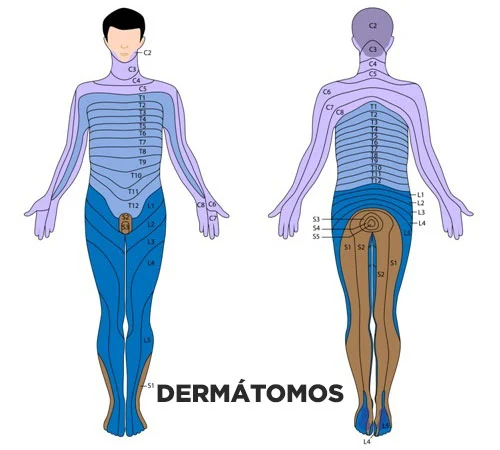
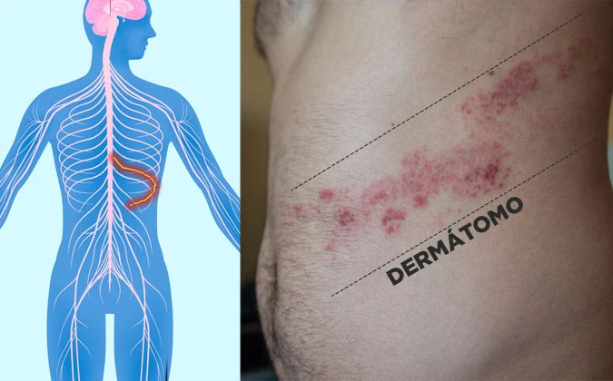

Herpes Zóster
O que é?
O herpes zóster (HZ), conhecido popularmente pelos nomes cobreiro ou zona, é uma
doença infecciosa provocada pelo vírus Varicella-Zoster (Human Herpesvirus-3 –
HHV-3), o mesmo que causa a catapora (varicela).
Apesar de ser o mesmo vírus, tecnicamente o herpes zóster não é catapora. Os
sintomas, a epidemiologia e as complicações são bem diferentes. É o mesmo
agente infeccioso, mas não é a mesma doença.
O herpes zóster também não tem a ver com o herpes labial ou herpes genital. Os
nomes são semelhantes e eles são causados por vírus da mesma família,
Herpesviridae, mas herpes zoster e herpes são duas doenças completamente
distintas.
Como surge
Quando somos expostos ao vírus Varicella-Zoster pela primeira vez, fato que ocorre
habitualmente durante a infância, desenvolvemos catapora, que é uma doença que
se caracteriza por febre e erupções avermelhadas por todo o corpo.
Após uma ou duas semanas de sintomas, o nosso sistema imunológico consegue
criar anticorpos, controla a replicação do vírus e a doença desaparece
espontaneamente.
O problema é que a cura dos sintomas não é necessariamente a cura do vírus.
Durante a fase inicial da catapora, o vírus invade as terminações nervosas da pele e
migra até algumas cadeias de gânglios localizadas próximo à medula espinhal e ao
cérebro, conseguindo, assim, permanecer “escondido” do sistema imunológico por
períodos que podem durar décadas.
O paciente, portanto, cura-se da catapora, mas permanece infectado pelo
vírus Varicella-Zoster pelo resto da vida.
Em geral, isso não é um problema, pois toda vez que o vírus tenta sair do seu
“esconderijo” nos gânglios nervosos, o nosso sistema imunológico, que agora
possui anticorpos específicos contra o vírus Varicella-Zoster, consegue impedi-lo.
O paciente mantém o vírus encurralado, não apresenta sintoma e nem é capaz de
transmiti-lo para outras pessoas.
Entretanto, a nossa batalha contra o Varicella-Zoster depende de um sistema
imunológico forte. O vírus pode ficar décadas à espera de um evento que provoque
enfraquecimento imunológico para voltar a se multiplicar.
Quando isso ocorre, a reativação do Varicella-Zoster não provoca um novo quadro
de catapora, mas sim uma doença diferente, chamada herpes zóster.
Sintomas
Quando o vírus se reativa, ele faz o caminho inverso, viajando do nervo de volta à
pele.
Ao chegar à pele, o vírus provoca as lesões típicas do herpes zoster: múltiplas
v vesículas (bolhas) avermelhadas, que ficam restritas a uma pequena zona do corpo,
exatamente aquela que é inervada pelos nervos que “escondiam” o vírus.
A forma como as lesões do herpes zóster se agrupam, geralmente em “faixa” e
nunca ultrapassando a linha média do corpo, é a característica mais importante para
o diagnóstico da infecção.
Para entender o porquê da lesão pelo herpes zóster ter esse comportamento é
preciso conhecer um pouco sobre a anatomia da medula espinhal e seus nervos.
Explicaremos de forma simples.
A medula espinhal está conectada ao cérebro, possui mais ou menos 45 cm de
comprimento e fica dentro da coluna vertebral. Ela vai da primeira vértebra cervical,
lá em cima do pescoço, até a segunda vértebra lombar.
Ao longo da medula saem vários plexos de nervos periféricos para todo o corpo, que
são responsáveis pela inervação de regiões específicas. Cada região do corpo que
recebe um ramo dos nervos oriundos da medula é chamada
dermátomo.

Cada vértebra lança um par de nervos, cada um inervando uma metade do corpo. A
região do mamilo esquerdo e direito, por exemplo, são inervadas por um par de
nervos que nasce na altura da 4.ª vértebra da coluna torácica (T4). Já a região do
umbigo é inervada por nervos que nascem na altura da 10.ª vértebra torácica (T10).
Portanto, se o vírus Varicella-Zoster estiver escondido em gânglios próximos à raiz
do nervo à esquerda da vértebra T10, por exemplo, quando houver reativação, ele
viajará até a região do umbigo e causará erupções em uma faixa do abdômen que
fica à esquerda do umbigo.
